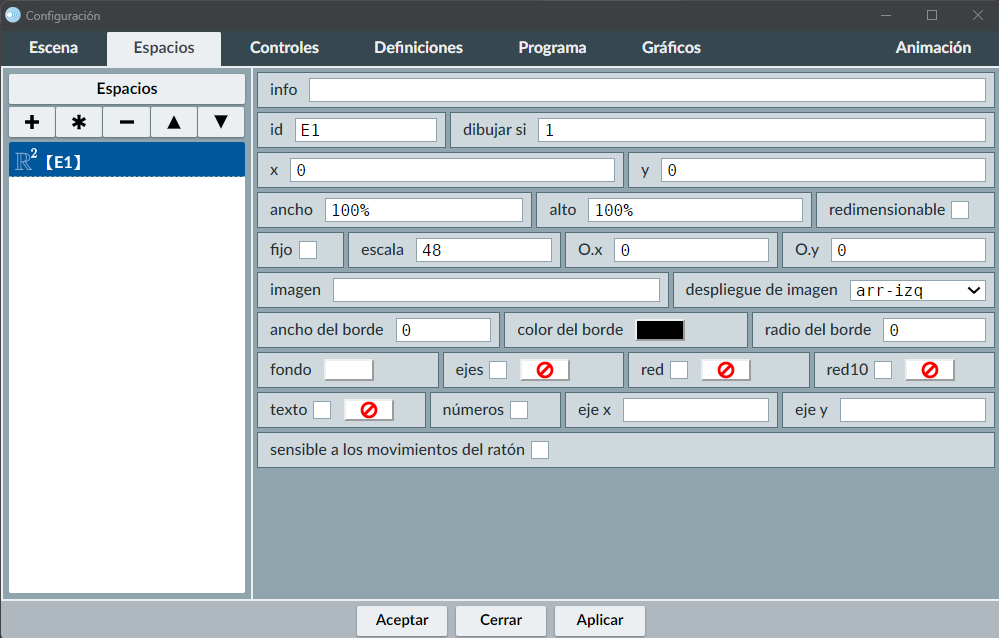
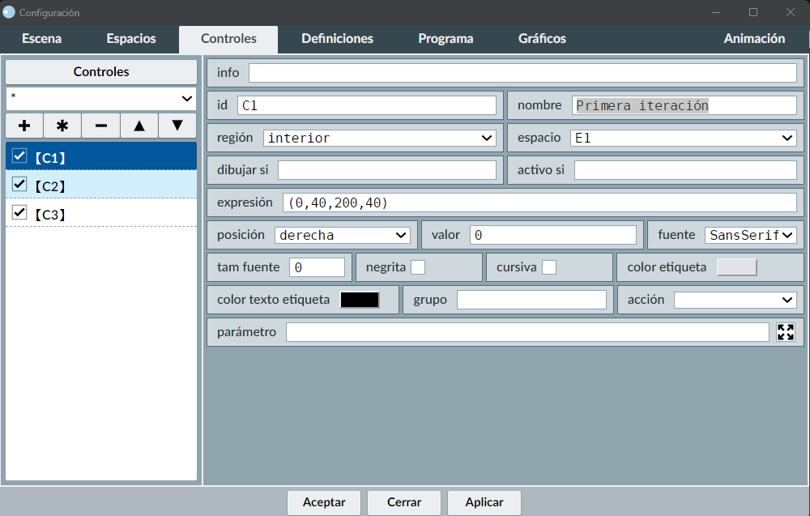
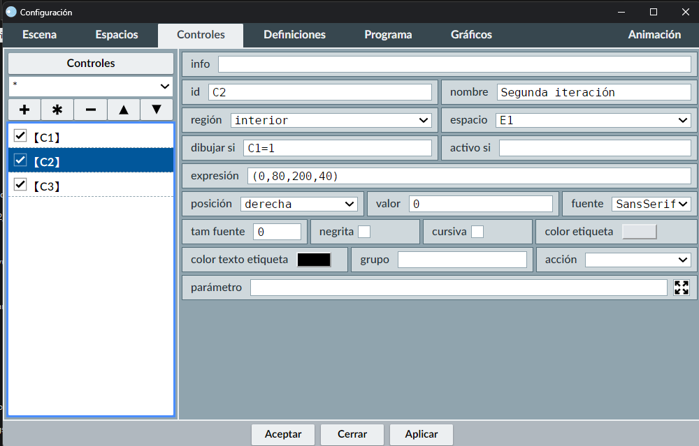
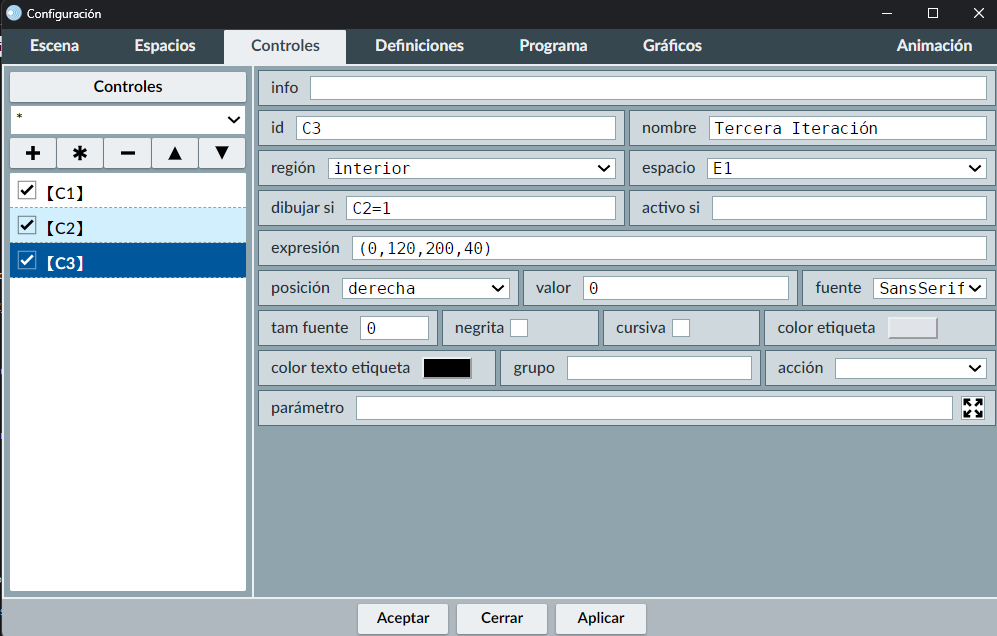
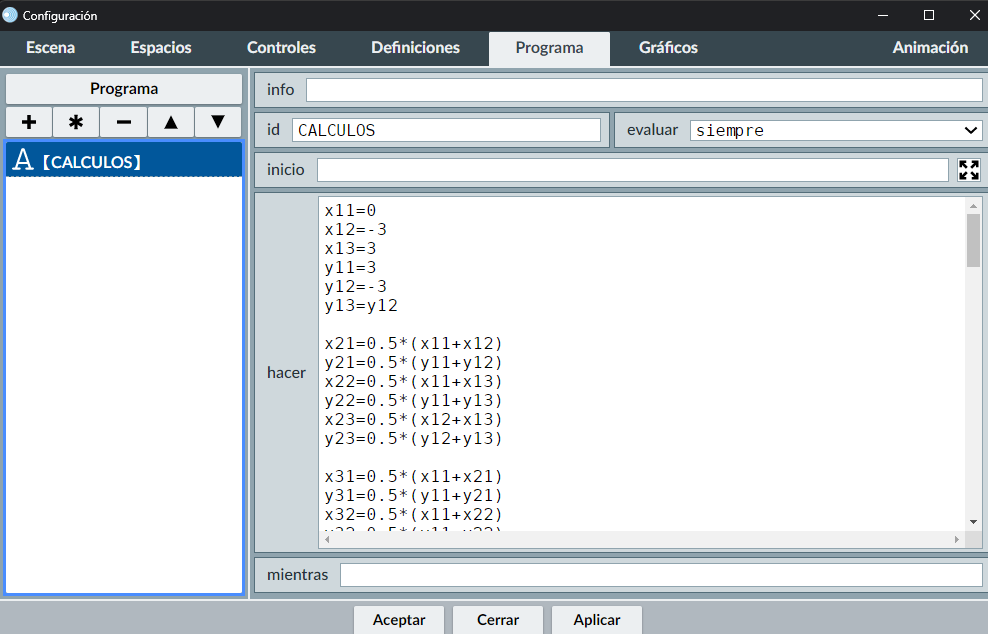
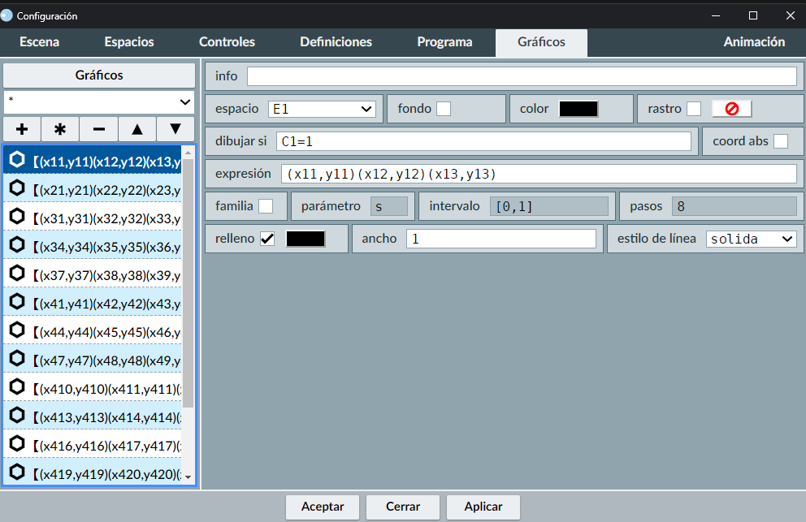
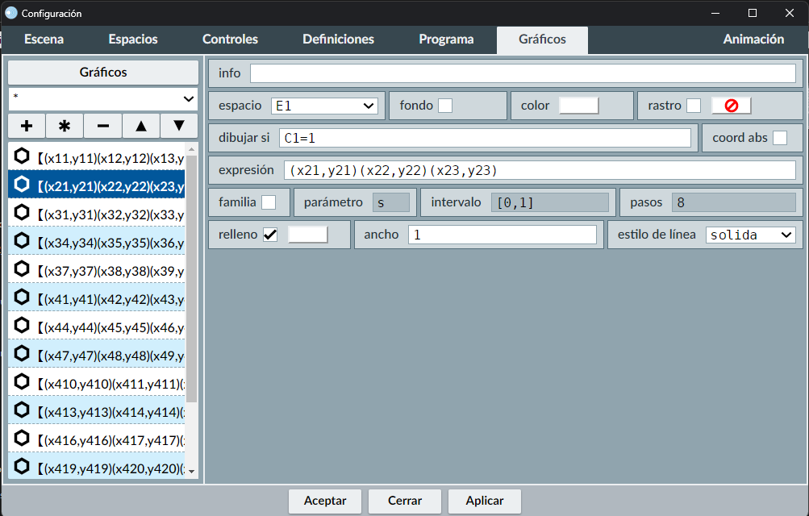
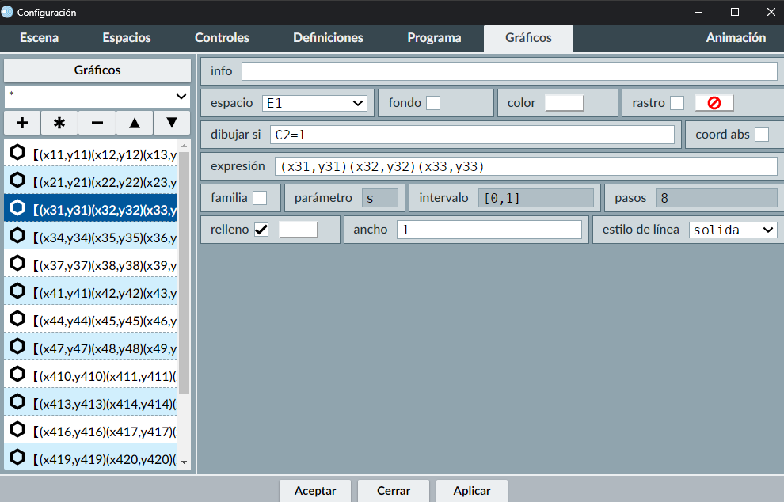
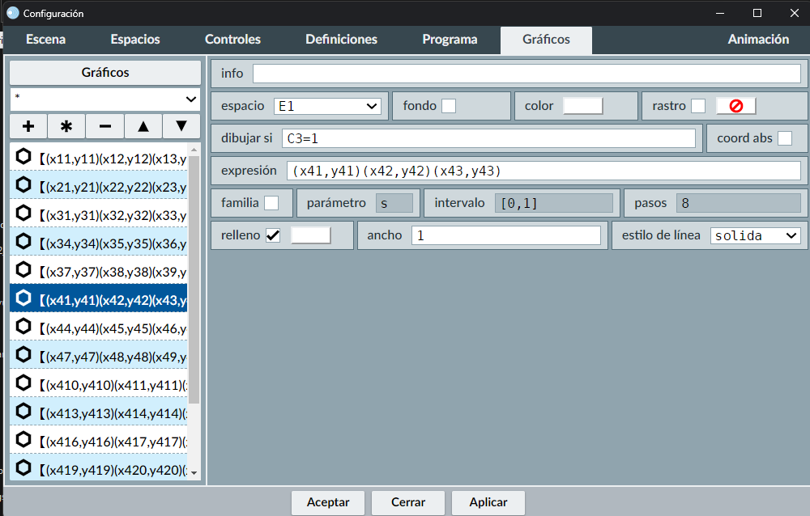
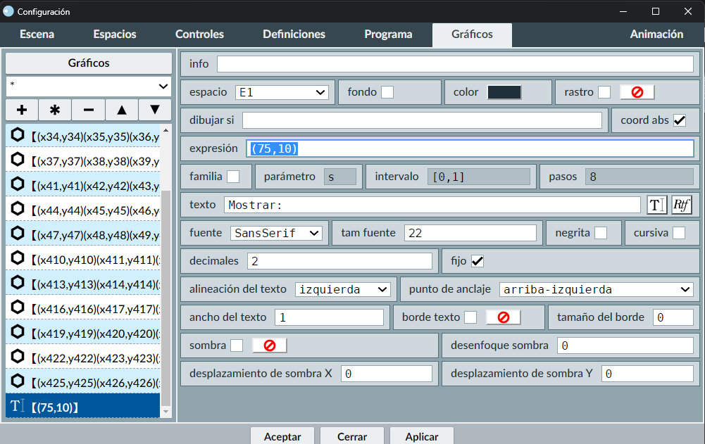

Pasos para la construcción
| 1 |  | En la sección Espacios, quitar los ejes y las redes en la escena para que quede un espacio de trabajo limpio. |
| 2 |  | Crear la casilla C1, con título "Primera iteración" |
| 3 |  | Crear la casilla C2, con título "Segunda iteración" y con la condición: Dibujar si C1=1 |
| 4 |  | Crear la casilla C3, con título "Tercera Iteración" y con la condición: Dibujar si C2=1 |
| 5 |  |
Definir, en la sección Programa, los puntos para los vértices de los diferentes triángulos. Se sugiere usar la siguiente nomenclatura para mantener un adecuado orden: xij con:
Por ejemplo: Para los vértices del triángulo inicial, sus vértices son los pares ordenados (x11,y11), (x12,y12), (x13,y13), para la primera iteración, los vértices son: (x21,y21), (x22,y22), (x23,y23) y así sucesivamente. |
| 6 |  | Crear, con la herramienta polígono, el triángulo inicial, con vértices en: (x11,y11), (x12,y12), (x13,y13), de color negro y con la condición: Dibujar si C1=1 |
| 7 |  | Crear, con la herramienta polígono, el triángulo de la primera iteración, de color blanco y con la condición: Dibujar si C1=1 |
| 8 |  | Colocar, con la herramienta polígono, los 3 triángulos de la segunda iteración, de color blanco y con la condición: Dibujar si C2=1 |
| 9 |  | Colocar, con la herramienta polígono, los 9 triángulos de la tercera iteración, de color blanco y con la condición: Dibujar si C3=1 |
| 10 |  | Colocar el texto "Mostrar:", en la posición (75,10) |